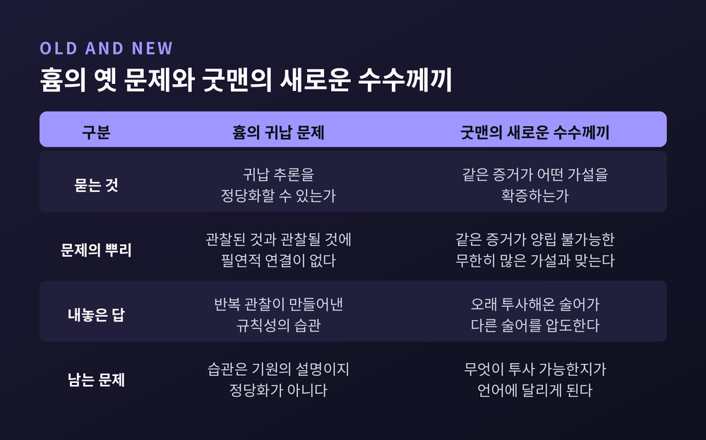
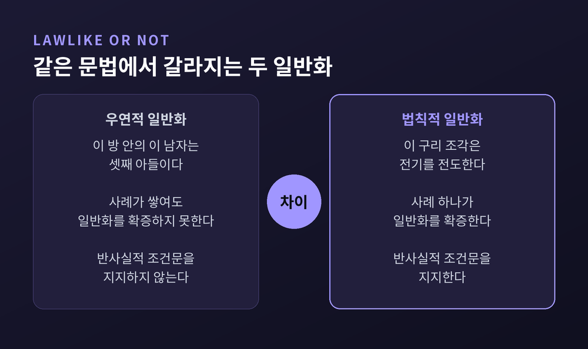
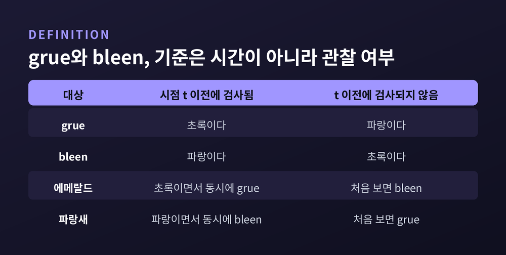
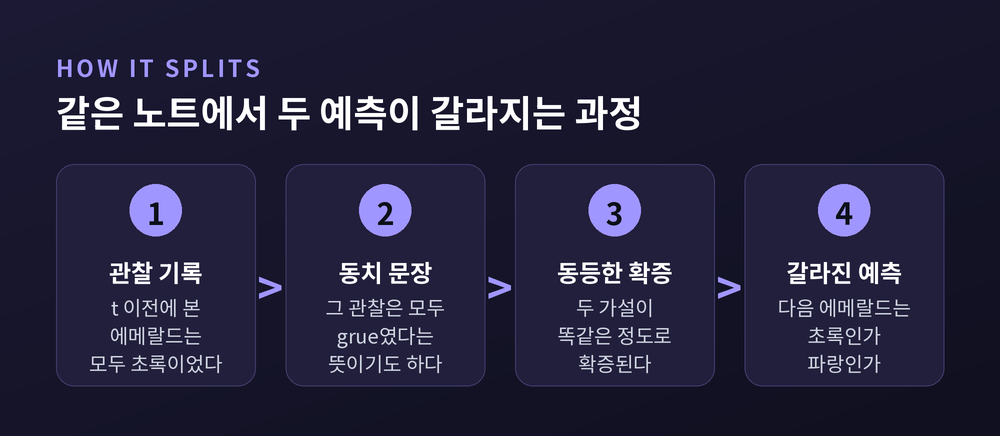
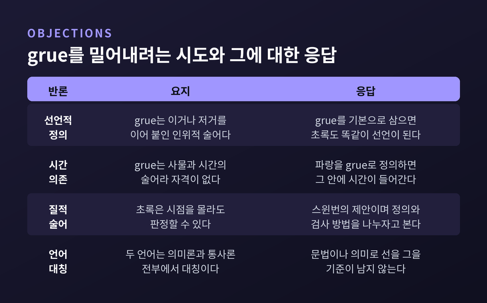

굿맨의 그루 역설, 새로운 귀납의 수수께끼가 과학을 흔든 이유
이번 글에서는 넬슨 굿맨의 '새로운 귀납의 수수께끼'를 정리해 보겠습니다. 초록도 파랑도 아닌 grue라는 낯선 말 하나가 300년 묵은 귀납 문제를 전혀 다른 자리로 옮겨놓았습니다. 무엇이 무너졌고 지금 무엇이 남았는지 차례로 짚어보겠습니다.

흄이 물은 것과 굿맨이 물은 것
흄의 귀납 문제는 이렇게 요약됩니다. 예측은 아직 관찰되지 않은 것에 관한 주장입니다. 관찰된 것과 관찰될 것 사이에 필연적 연결은 없습니다. 그러니 예측에는 객관적 정당화가 없습니다.
흄이 내놓은 답은 습관이었습니다. 한 종류의 사건에 다른 종류의 사건이 뒤따르는 것을 되풀이해 보면 규칙성의 습관이 생기고, 예측은 그 습관에 기댑니다.
많은 철학자가 이 답을 못마땅해했습니다. 예측이 어디서 생겨나는지를 설명했을 뿐, 그것이 옳은 이유는 대지 못했다는 것입니다.
굿맨은 그 비판을 거부합니다. 흄이 더 깊은 것을 짚었다고 보았습니다.
굿맨이 보기에 귀납의 정당화는 연역 체계를 정당화하는 문제와 같은 종류입니다. 직관적으로 타당해 보이는 추론이 규칙에 어긋나면 그 추론을 버립니다. 반대로 직관이 규칙에 대한 신뢰보다 강하면 규칙 쪽을 고칩니다. 양쪽을 조금씩 맞춰 안정된 체계에 이릅니다. 훗날 존 롤스가 1971년에 이 기법을 '반성적 평형'이라 불렀습니다.
그래서 물음이 옮겨갑니다.
"귀납을 정당화할 수 있는가"가 아니라, "같은 증거가 도대체 어떤 가설을 확증하는가".
굿맨에게 확증은 정당화의 문제가 아니었습니다. 증거가 일반화를 확증한다는 말이 정확히 무슨 뜻인지 정의하는 문제였습니다. 바로 이 전환 지점에서 grue가 등장합니다.

구리 조각과 셋째 아들
굿맨은 grue를 곧장 꺼내지 않습니다. 먼저 두 문장을 나란히 놓습니다.
- 이 구리 조각은 전기를 전도한다.
- 이 방 안의 이 남자는 셋째 아들이다.
같은 문법 절차로 일반화를 만들어 봅니다. 앞의 것에서는 "모든 구리는 전기를 전도한다"가 나옵니다. 뒤의 것에서는 "이 방 안의 모든 남자는 셋째 아들이다"가 나옵니다.
앞의 일반화는 사례 하나로 확증됩니다. 뒤의 일반화는 그렇지 않습니다.
만드는 방식이 완전히 같은데 결과가 다릅니다. 그렇다면 차이는 문장의 생김새에 있지 않습니다.
차이는 법칙적이냐 우연이냐에 있습니다. 법칙적 진술은 자기 사례로 확증되고, 무엇보다 반사실적 조건문을 지지합니다. "내 손에 있는 이것이 구리라면 전기를 전도할 것이다"는 성립합니다. 반면 "임의의 남자가 이 방에 있다면 그는 셋째 아들일 것이다"는 성립하지 않습니다.
그러면 무엇이 일반화를 법칙적으로 만드는가. 굿맨은 이 물음의 답이 얼마나 구하기 어려운지를 보이려고 grue를 설계합니다.

grue와 bleen의 정확한 정의
정의는 이렇습니다.
x가 grue이다 = x가 시점 t 이전에 검사되었고 초록이다. 또는 x가 t 이전에 그렇게 검사되지 않았고 파랑이다.
짝이 되는 말도 있습니다. bleen입니다.
x가 bleen이다 = x가 시점 t 이전에 검사되었고 파랑이다. 또는 x가 t 이전에 그렇게 검사되지 않았고 초록이다.
여기서 오해가 자주 생깁니다. 기준은 시간 자체가 아니라 관찰 여부입니다.
"t 이전이면 초록, t 이후면 파랑"이 아닙니다. "t 이전에 검사되었으면 초록, 그렇게 검사되지 않았으면 파랑"입니다. 그러므로 t가 지난 뒤 처음 꺼내 본 에메랄드가 grue이려면, 그것은 파랑이어야 합니다.
t는 임의로 고정한 미래의 한 시점입니다. 굿맨은 1946년 논문에서는 유럽 전승기념일을 기준으로 썼고, 1955년 책에서 '어떤 시점 t'라는 형식으로 다듬었습니다.
t 이전에 관찰된 에메랄드와 잘 자란 잔디에는 초록과 grue가 함께 적용됩니다. t 이전에 관찰된 파랑새와 파란 꽃에는 파랑과 bleen이 함께 적용됩니다. 그리고 t가 지나면 에메랄드는 bleen이 되고 파랑새는 grue가 됩니다.
t 이전에 서 있는 관찰자에게는, 어느 쪽 짝을 미래로 밀고 나가야 하는지가 정해져 있지 않습니다.

노트는 같은데 예측이 갈립니다
당신이 보석학자라고 해봅시다. 노트에는 이런 문장이 가득합니다. "장소 y에서 날짜 z에 발견된 에메랄드 x는 초록이다." 날짜 z는 모두 t 이전입니다.
이 노트는 "모든 에메랄드는 초록이다"를 지지하는 것처럼 보입니다.
그런데 t 이전에는, 노트의 모든 문장마다 짝이 되는 문장이 성립합니다. "그 에메랄드는 grue다." 두 문장은 분석적으로 동치입니다. 하나가 참이면 다른 하나도 반드시 참입니다.
그러면 이 grue 증거 문장들은 "모든 에메랄드는 grue다"를 확증합니다. 그것도 정확히 같은 정도로 확증합니다.
이제 두 예측이 나옵니다.
- t 이후 처음 검사되는 다음 에메랄드는 초록일 것이다.
- t 이후 처음 검사되는 다음 에메랄드는 grue일 것이다.
앞에서 정의를 따라왔다면 아시겠지만, 두 번째 예측은 그 에메랄드가 파랑이라는 뜻입니다. 두 예측은 함께 참일 수 없습니다. 그런데 과거의 증거는 둘을 똑같이 뒷받침합니다.
여기서 끝이 아닙니다. grue와 비슷한 술어는 무한히 많이 만들 수 있습니다. t를 옮기고 색을 바꾸면 얼마든지 나옵니다. 그때마다 서로 양립하지 않는 새 예측이 하나씩 붙습니다.
그래서 결론이 이렇게 됩니다. 어떤 일반화를 확증하는 것처럼 보이는 증거 집합은, 그와 양립 불가능한 무한히 많은 일반화도 함께 확증합니다. 무엇이든 무엇이든 확증할 수 있는 셈입니다.
흄은 이 문제를 놓쳤다는 것이 굿맨의 지적입니다. 우리는 관찰한 모든 연합에서 습관을 만들지 않습니다. 지금까지 본 에메랄드는 전부 초록이었고 전부 grue이기도 했습니다. 그런데 초록에 대해서만 습관이 생겼습니다. 흄의 답은 왜 그중 하나만 걸러지는지를 말해주지 않습니다.

억지로 만든 말이니 반칙 아닙니까
가장 먼저 나오는 반론은 이것입니다. grue는 "이거나 저거"를 이어 붙여 인위적으로 만든 말이니 애초에 자격이 없다는 것입니다.
굿맨은 이 반론이 통하지 않는다고 답합니다. grue와 bleen을 기본 술어로 놓아 보십시오. 그러면 초록을 이렇게 정의할 수 있습니다. "t 이전에 관찰되었으면 grue이고, 그렇지 않으면 bleen인 것." 파랑도 같은 방식으로 정의됩니다. 이쪽 정의만 부적격이라고 우기면 논점을 미리 가로채는 셈이 됩니다.
두 번째 반론도 비슷하게 막힙니다. grue는 사물만의 성질이 아니라 사물과 시간의 성질이니 자격 미달이라는 반론입니다. 어떤 것이 초록임은 시점을 몰라도 알 수 있지만, grue임은 t를 모르면 알 수 없으니까요. 굿맨은 이것도 논점 선취로 봅니다. 파랑을 grue와 bleen으로 정의하면 그 정의 안에 시간이 명시적으로 들어가기 때문입니다.
이 대칭성을 스탠퍼드 철학백과는 아주 단호하게 정리합니다. 초록과 파랑을 기본으로 삼는 언어에서는 grue와 bleen이 시점에 기대는 말입니다. 그런데 grue와 bleen을 기본으로 삼는 언어에서는 초록과 파랑이 시점에 기대는 말이 됩니다. 두 언어는 의미론적 성질과 통사론적 성질 전부에서 대칭입니다.
그렇다면 투사 가능한 술어와 그렇지 않은 술어를 가를 문법적 기준도, 의미론적 기준도 남아 있지 않습니다. 힐러리 퍼트넘을 비롯한 여러 철학자가 같은 지점을 짚었습니다.

헴펠의 까마귀와 나란히 놓으면
이 문제는 혼자 나타난 것이 아닙니다. 1940년대에 카를 헴펠이 먼저 비슷한 자리를 건드렸습니다.
헴펠은 1945년 논문에서 이렇게 물었습니다. "모든 까마귀는 검다"는 대우를 취하면 "검지 않은 것은 까마귀가 아니다"와 논리적으로 동치입니다. 그런데 니코 기준에 따르면 "모든 F는 G다"는 F이면서 G인 사례로 확증됩니다. 동치 조건에 따르면 한쪽을 확증하는 것은 다른 쪽도 확증해야 합니다.
두 원칙을 합치면 이상한 결론이 나옵니다. 하얀 신발 한 짝을 보는 것이 "모든 까마귀는 검다"를 확증하게 됩니다. '실내 조류학의 역설'이라는 별명이 붙은 이유입니다. 헴펠 자신은 이 결론을 그대로 받아들였습니다.
헴펠의 확증 이론은 모든 대상에 적용되는 가설과 한 대상에만 적용되는 증거 문장을 구분하면 문제가 풀린다고 보았습니다. grue는 바로 그 구분을 겨눈 반례였습니다. 문법만 가지고는 확증을 정의할 수 없다는 것을 보이려는 장치였던 셈입니다.
콰인은 두 역설을 한 줄에 꿰어 놓습니다. 헴펠의 까마귀는 투사 가능한 술어의 여집합이 투사 가능할 필요는 없음을 보여줍니다. 굿맨의 에메랄드는 초록은 투사 가능하지만 grue는 그렇지 않음을 보여줍니다.
굿맨의 답 — 오래 써온 말이 이깁니다
굿맨의 해법은 흄의 해법과 닮았습니다. 술어 선택을 궁극적으로 정당화하는 이론을 세우는 대신, 우리가 실제로 어떻게 술어를 고르는지를 설명하는 이론을 만듭니다.
열쇠는 착근(entrenchment)입니다.
초록이 grue보다 선호되는 이유는 단순합니다. 우리가 과거에 초록이 들어간 가설을 grue가 들어간 가설보다 압도적으로 많이 투사해왔기 때문입니다. 두 가설의 경험적 실적이 같다면, 더 잘 착근된 술어를 쓴 쪽이 다른 쪽을 압도합니다.
굿맨은 이를 바탕으로 투사가능성을 정의합니다. 어떤 가설이 투사 가능하려면 지지되어야 하고, 위반되지 않아야 하고, 소진되지 않아야 하며, 충돌하는 모든 가설이 압도되어야 합니다. 이 중 하나라도 어긋나면 투사 불가능합니다. 충돌하는 두 가설이 둘 다 멀쩡한데 어느 쪽도 상대를 압도하지 못하면, 그 가설은 비투사적입니다.
정직하게 말하면 이 답은 근거의 제시가 아니라 관행의 기록에 가깝습니다. 굿맨 자신도 그 이상을 요구할 수도 얻을 수도 없다고 보았습니다.
대가도 분명합니다. 이 해법은 무엇이 투사 가능한지를 우리가 써왔던 언어에 달린 문제로 만듭니다. 스탠퍼드 철학백과는 이 언어 상대주의가 굿맨의 비실재론과 이어져 있다고 짚습니다. 그리고 그 비실재론이 굿맨 철학에서 가장 논쟁적인 대목이라고 덧붙입니다.
논쟁의 규모도 만만치 않습니다. 1994년에 나온 논문 선집 한 권에만 300개가 넘는 항목의 주석 서지가 실려 있습니다. 그 뒤로도 문헌은 계속 늘고 있습니다.
콰인, 스윈번, 카르납의 다른 길
굿맨의 답에 모두가 만족한 것은 아닙니다. 다른 해법도 여럿 나왔습니다.
카르납은 굿맨의 1946년 논문에 곧바로 응답했습니다. 그는 속성을 순수 질적인 것, 순수 위치적인 것, 둘이 섞인 것으로 나눕니다. 그리고 잠정적인 답을 냅니다. 순수 질적 속성은 투사 가능하고, 순수 위치적 속성은 투사 불가능하며, 혼합 속성은 더 따져봐야 한다는 것입니다.
스윈번은 1968년에 다른 구분을 제안했습니다. 정의가 아니라 검사 방법으로 나누자는 것입니다. 초록은 대상이 특정 시점·장소와 어떤 관계에 있는지 몰라도 판정할 수 있는 질적 술어입니다. grue는 t 이전에 관찰되었는지를 알아야만 판정할 수 있는 위치적 술어입니다. 초록이 grue로 정의될 수 있다는 사실은, 초록이 질적 술어라는 사실과 무관하다는 것이 그의 논지입니다. 두 술어가 상충하는 예측을 내면 질적인 쪽을 택하라고 말합니다.
콰인은 자연종으로 갑니다. 초록 에메랄드 둘은 grue 에메랄드 둘보다 서로 더 닮았습니다. 초록 에메랄드는 자연종을 이루고 grue 에메랄드는 그렇지 않습니다. 다만 콰인 자신이 유사성이라는 개념의 과학적 지위가 미덥지 않다고 인정합니다. 게다가 굿맨은 유사성으로 종을 정의하려는 시도에 반례를 냈습니다. 그 정의를 따르면 "빨갛고 둥근 것, 빨갛고 나무인 것, 둥글고 나무인 것"을 모은 집합도 자연종이 되어버립니다. 누구도 그런 것을 종이라 부르지는 않습니다.
우리의 닮음 감각이 왜 세계와 맞아떨어지느냐는 물음에, 콰인은 다윈을 불러옵니다. 성질을 배열하는 방식이 유전되는 형질이라면, 가장 성공적인 귀납을 낳은 배열이 자연선택으로 살아남았으리라는 것입니다. 다만 이 설명에도 빈틈이 있습니다. 사람이 낯선 분야에 익숙해지면서 자기 감각을 다시 다듬는 능력은 설명하지 못합니다.
크립키는 아예 다른 방향으로 밀고 갑니다. 그는 quus라는 연산을 제안했습니다. 덧셈과 모든 경우에 같지만, 더하는 수 중 하나가 57 이상이면 답이 5가 되는 연산입니다. 그러고는 묻습니다. 내가 지금까지 더하기를 의미했지 quus를 의미한 것이 아니었음을 무엇으로 아는가. 굿맨의 문제가 귀납에 관한 회의로 이어졌다면, 크립키의 문제는 의미에 관한 회의로 이어집니다.
기계도 같은 문제를 안고 있습니다
이 수수께끼는 철학 교실 안에만 머물지 않았습니다.
지도학습에는 '공짜 점심은 없다'는 정리가 있습니다. 학습 문제들에 균등한 분포를 가정하고 평균을 내면, 모든 학습 알고리즘의 정확도가 정확히 같아진다는 내용입니다. 데이비드 월퍼트가 1996년에 정식화했습니다.
구조가 낯익습니다. 같은 데이터가 무한히 많은 상충하는 가설과 부합한다는 이야기이기 때문입니다. 그래서 기계학습은 편향을 미리 넣습니다. 귀납 편향(inductive bias)이라 부릅니다. 어떤 아키텍처를 쓸지, 무엇을 규제할지, 어떤 형태의 답을 선호할지를 학습 이전에 정해 둡니다.
예전에는 이 편향을 사람이 문제마다 손으로 깎아 넣는 것이라고 여겼습니다. 지금은 조금 다른 이야기도 나옵니다. 2024년 ICML에 실린 한 연구는, 균등하게 뽑은 데이터셋은 거의 전부 복잡도가 높은 반면 실제 세계의 문제는 압도적으로 저복잡도 데이터를 낸다고 논증합니다. 그리고 신경망 모델도 같은 선호를 공유한다고 봅니다. 컴퓨터 비전용으로 설계된 아키텍처가 무관해 보이는 영역의 데이터도 압축해내고, 무작위로 초기화된 언어모델조차 단순한 시퀀스 쪽을 선호한다는 실험 결과를 제시합니다.
굿맨 본인이 기계학습을 말한 적은 없습니다. 이것은 후대가 발견한 구조의 닮음이지, 굿맨의 주장이 아닙니다. 다만 대응 관계는 선명합니다. 굿맨의 착근이 "오래 써온 말을 택한다"는 편향이라면, 오늘의 대응물은 "단순한 쪽을 택한다"는 편향입니다. 어느 쪽도 증명이 아니라 선택입니다.
정리하면 이렇습니다.
굿맨은 흄의 문제를 풀지 않았습니다. 대신 문제를 더 정확한 자리로 옮겨놓았습니다. 귀납이 정당화되느냐가 아니라, 같은 증거 앞에서 우리가 왜 하필 그 말로 세계를 자르는가.
그리고 그 물음에 대한 그의 답은 겸손합니다. 정당화가 아니라 이력입니다. 우리가 오래 써온 말이 이깁니다.
썩 만족스러운 답은 아닙니다. 70년이 지나도록 논쟁이 이어지는 것이 그 증거입니다. 그래도 이 수수께끼가 남긴 것이 하나 있다면 이것일 듯합니다.
"증거는 가설을 고르지 않는다. 고르는 것은 우리가 쓰는 말이다."
다음에 데이터가 스스로 말해준다는 문장을 만나신다면, 잠시 멈춰 물어보시길 권합니다. 그 데이터는 어떤 말로 적혀 있습니까.